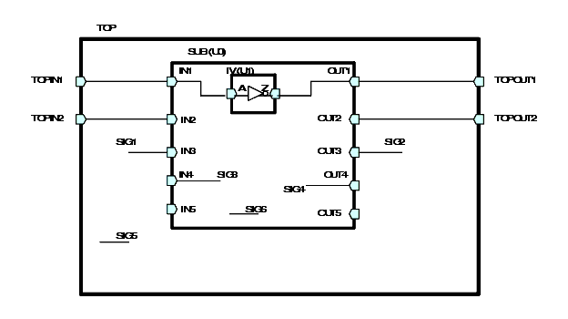

| Description | An undriven net driving a cell, propagates X in the design. This rule will fire only on undriven net and not on unused net because unused net does not cause any problem and another rule NTL_LAN15 will detect such nets. This rule also detects undriven signals that have been defined in VHDL packages. If the illegal net is a part select of a vector, then a secondary message appears to report the vector's width and range information.Arguments: %s1 is the location of the undriven net.%s2 is the location of fanout of the undriven net.%s3 is the signal name of the undriven net.%s4 is the bit size of the undriven net (if it is a vector or part select of a vector).%s5 is the left bound of the vector.%s6 is the right bound of the vector. Use the parameter "APPLY_UNUSED_PORT" to specify if this rule should report on unused ports.You can use the rule_set_parameter Tcl command and the APPLY_UNUSED_PORT parameter to specify if you want Leda to examine for unused ports. If you don't want this rule to examine the unused ports, set the value of this parameter to 0. The default value is 1. For example:
leda> rule_set_parameter -rule NTL_CON12 \
-parameter APPLY_UNUSED_PORTS -value {0}
|
| Policy | DESIGN |
| Ruleset | CONNECTIVITY |
| Language | VHDL/Verilog |
| Type | Hardware |
| Severity | Error |
The below schematic demonstrates the behavior of this rule:

The default behavior (parameter APPLY_UNUSED_PORT with default value) of this rule for the above circuit is:
TOP.v:4: NTL_CON12: undriven net TOP.SIG1 TOP.v:13: NTL_CON12: undriven net TOP.U0.IN4 TOP.v:13: NTL_CON12: undriven net TOP.U0.IN5 TOP.v:14: NTL_CON12: undriven net TOP.U0.OUT2 TOP.v:14: NTL_CON12: undriven net TOP.U0.OUT3 TOP.v:14: NTL_CON12: undriven net TOP.U0.OUT5 TOP.v:15: NTL_CON12: undriven net TOP.U0.SIG4
The behavior (parameter APPLY_UNUSED_PORT with value set to 0) of this rule for the above circuit is:
TOP.v:14: NTL_CON12: undriven net TOP.U0.OUT2Example
This is an example of invalid Verilog code that illustrates the problem:
module ntl_con12_top ( Reset, Din, Dout); input Reset, Din; output Dout; wire Net_undriven; // NTL_CON12 fires -- undriven net assign Dout = !Reset ? 0 : (Net_undriven ? 1 : ~Din ); endmodule